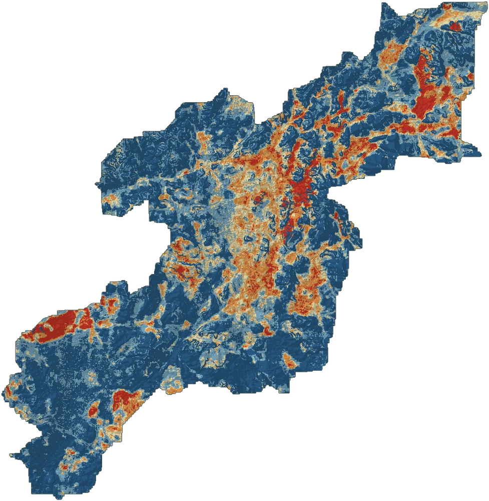

Machine learning · Hydrology · Saudi Arabia
Flash Flood Susceptibility Mapping: Makkah Urban Basins
A SHAP-explained stacking ensemble (Random Forest, XGBoost, LightGBM and CatBoost, with a logistic-regression meta-learner) that maps flash flood susceptibility across three wadi sub-basins (412 km²) on a 30 m grid from ten conditioning factors.
- 0.815ROC-AUC, spatial block CV
- 66.6 km²high / very high susceptibility
- 10conditioning factors
Top drivers by SHAP: NDVI, slope, rainfall and population density. Random CV overstated AUC by about 0.10, which is why spatial blocking was used.